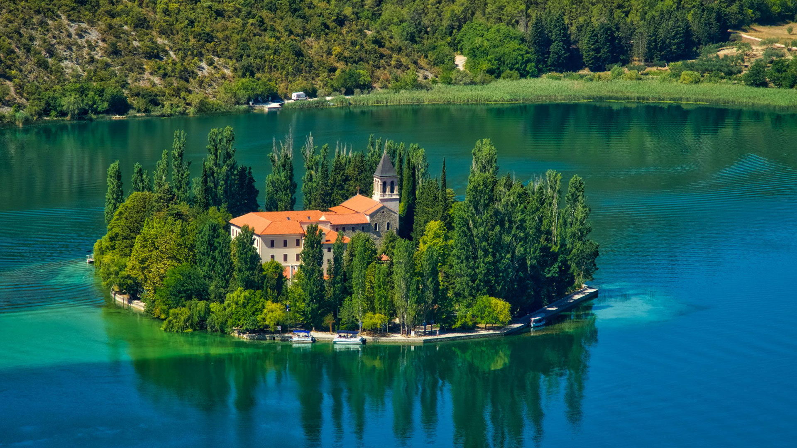
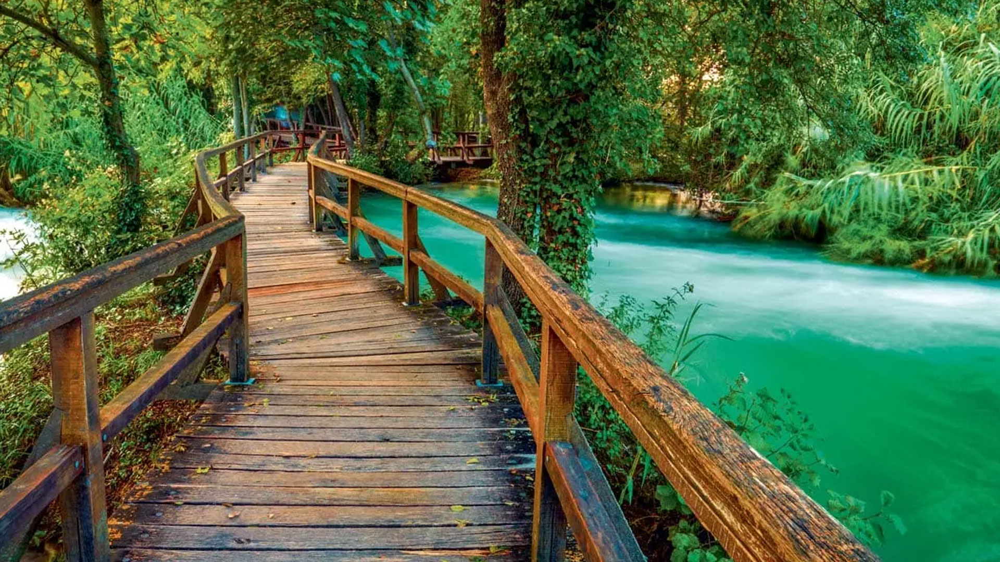
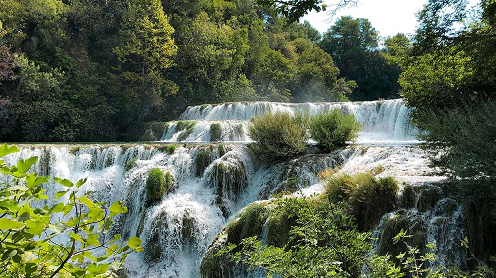

Krka




Nacionalni park Krka obuhvaća rijeku Krku i njezin kanjonski tok, gdje se voda i krš oblikuju u skladan i živ krajolik. Rijeka se probija kroz vapnenačke stijene, stvara kaskade i mirne lagune, a zatim se širi u prostor bogat zelenilom, pticama i tradicijskim naseljima. Ovdje se prirodni procesi mogu promatrati izbliza: promjena toka, nastanak sedre i stalno preoblikovanje obala. Krka je park koji djeluje mirno, ali je u svojoj suštini dinamičan i živ.
Najpoznatiji vodopad parka je Skradinski buk, veliki niz slapova i brzacâ koji okuplja više rukavaca rijeke. Šum vode i fina vodena prašina stvaraju poseban ugođaj, a drvene šetnice omogućuju siguran obilazak bez narušavanja osjetljivog ekosustava. Na drugim dijelovima parka nalaze se manji, ali jednako slikoviti slapovi i brzaci, koji posebno dolaze do izražaja nakon kišnih razdoblja i u proljeće, kada je vodostaj viši.
Roški slap je drugi prepoznatljiv dio rijeke, poznat po širokom, stepenastom padu i nizu sedrenih barijera. Ovdje se voda prelijeva preko brojnih pragova i stvara prizor koji podsjeća na prirodne terase. U blizini se nalaze vidikovci i staze koje otkrivaju panoramske poglede na kanjon i šume. Posjetitelji često opisuju Roški slap kao mirniji i tiši doživljaj, pogodan za duže zadržavanje i promatranje prirode.
Krka je poznata i po mirnijim dijelovima toka, gdje rijeka tvori jezera i proširenja, poput Visovačkog jezera. Na njegovu sredini nalazi se otočić s franjevačkim samostanom, koji je važan kulturni i duhovni simbol područja. Kombinacija prirodnog okruženja i povijesne arhitekture daje ovom dijelu parka osobit karakter. Posjet otoku pruža priliku za kratku šetnju i upoznavanje s kulturnom baštinom koja se ovdje čuva stoljećima.
Bioraznolikost parka iznimno je bogata. Krka je stanište brojnih vrsta ptica, posebno močvarica i grabljivica, koje koriste rijeku i njene obale za hranjenje i gniježđenje. U vodi žive različite vrste riba i vodozemaca, dok su obale prekrivene trsjem, vrbama i drugim vodenim biljem. Šume u okolici skrivaju brojne kukce, leptire i male sisavce, koji su važan dio ekosustava. Takva raznolikost čini park zanimljivim za promatrače prirode i ljubitelje fotografije.
Geološki gledano, Krka je tipičan krški krajolik, u kojem voda ima ključnu ulogu u oblikovanju prostora. Sedra se stvara taloženjem minerala iz vode, a taj proces stvara prirodne barijere, slapove i male otoke. Ono što ovaj proces čini posebnim je njegova stalna aktivnost: barijere rastu i mijenjaju se, a tok rijeke se prilagođava. To je jedan od razloga zašto je zaštita parka izuzetno važna i zašto se posjetitelji moraju kretati isključivo označenim stazama.
Park je bogat i kulturno-povijesnom baštinom. Osim Visovca, tu je i samostan Krka, mjesto s dugom poviješću i važnim religijskim značajem. Uz rijeku se nalaze i ostaci tradicijskih mlinova, koji svjedoče o životu ljudi uz vodu. Nekada su se ovdje mljele žitarice i živjelo u skladu s ritmom rijeke. Danas su ti mlinovi obnovljeni kao interpretacijski sadržaji, koji posjetiteljima približavaju svakodnevicu prošlih vremena.
Staze u parku prilagođene su različitim razinama kondicije. Postoje kraće rute uz najpoznatije slapove, ali i duže, mirnije šetnje kroz šumske dijelove i uz kanjon. Brodske linije povezuju ključne točke i omogućuju doživljaj parka s vodene perspektive. Panoramske vožnje i šetnice omogućuju da se u kratkom vremenu doživi različit karakter rijeke, od brzaca do mirnih, zelenih uvala.
Sezonske promjene snažno utječu na doživljaj Krke. Proljeće donosi snažan protok vode i bogatstvo zelenila, ljeto je mirnije i pogodnije za dulje šetnje, jesen je vrijeme toplih boja i jasnijeg zraka, a zimi je park tiši, s posebnim ugođajem hladnih i bistrih dana. Svako doba ima svoj ritam i svoju paletu boja, pa se posjet može planirati prema željenom iskustvu.
Upravljanje parkom usmjereno je na očuvanje prirode i održivi turizam. Broj posjetitelja se kontrolira, a staze se održavaju tako da minimalno utječu na okoliš. Edukativne ploče i programi pomažu posjetiteljima da razumiju osjetljivost riječnih ekosustava i važnost očuvanja čiste vode. Pravila ponašanja su jasna: ne dira se flora i fauna, ne skreće se s staza i ne ostavlja otpad. Takav pristup osigurava dugoročnu zaštitu parka.
Krka je i mjesto koje potiče na usporavanje. Zvuk vode, mirisi vegetacije i lagani povjetarac stvaraju osjećaj smirenosti. Mnogi posjetitelji ovdje pronalaze trenutke tišine i odmaka od svakodnevice, dok drugi dolaze zbog fotografije, šetnje ili jednostavnog boravka u prirodi. Park nudi prostor za različite interese, ali svima pruža isti doživljaj: osjećaj da ste u dodiru s čistom i očuvanom prirodom.
Posebnu vrijednost parka čini spoj prirode i tradicionalnog načina života uz rijeku. Stare mlinice i kamene kućice nekad su bile dio svakodnevice, a danas podsjećaju na vrijeme kada se život prilagođavao ritmu vode. Uz pojedine staze moguće je vidjeti obnovljene objekte koji prikazuju kako se nekada mljelo žito i kako se koristila snaga rijeke. Takvi detalji obogaćuju posjet i daju mu priču, jer pokazuju da je Krka oduvijek bila prostor ljudske prisutnosti u skladu s prirodom.
U širem području parka nalaze se i brojne mirne uvale, šetnice te vidikovci s kojih se otvara pogled na kanjone i zelenilo. Ovi dijelovi često su manje posjećeni, pa pružaju osjećaj privatnosti i tišine. Hodanje uz mirnije dijelove rijeke otkriva bogatstvo biljnog svijeta, od vodenih biljaka do šumskih vrsta koje rastu uz obale. U takvim trenucima Krka djeluje kao prirodni vrt koji se neprestano mijenja, ali zadržava svoj sklad.
Važan dio doživljaja Krke je i promatranje vode. Bistrina rijeke, njezina hladnoća i stalna prisutnost stvaraju poseban odnos s prostorom. Voda ovdje nije samo dekor, već aktivna sila koja oblikuje stijene, hrani biljni svijet i održava životinjske vrste. Zbog toga se često naglašava potreba za očuvanjem čistoće rijeke, jer svaka promjena može utjecati na cijeli sustav. Posjet parku stoga nosi i poruku o važnosti očuvanja prirodnih resursa.
Za one koji žele dublje razumjeti park, dostupni su edukativni sadržaji i vođene ture koje objašnjavaju povijest, prirodne procese i kulturnu baštinu područja. Takvi programi približavaju Krku i onima koji žele više od vizualnog doživljaja, jer nude kontekst i znanje. Učenje u prirodi često ostaje upečatljivije nego u zatvorenim prostorima, a Krka je idealno mjesto za takvo iskustvo.
U šumskim dijelovima parka mogu se uočiti različite faze obnove prirode. Stabla različite starosti, prirodne čistine i rubna staništa stvaraju mozaik koji je važan za mnoge vrste. Takva struktura šume omogućuje život pticama koje se gnijezde u krošnjama, ali i onima koje trebaju otvoreniji prostor. Posjetitelji koji hodaju sporije često zamijete tragove životinja ili promjene u vegetaciji koje na prvi pogled nisu očite.
Noćni ugođaj parka također je poseban. Iako se većina posjeta odvija danju, mirnoća prostora i udaljenost od većih gradova stvaraju tamno nebo i jasno vidljive zvijezde. Takav ugođaj podsjeća na povezanost prirodnih ciklusa, gdje dan i noć mijenjaju ponašanje životinja i ritam vode. Krka je stoga mjesto koje se može doživjeti na više razina, ne samo vizualno, već i kroz osjećaj pripadnosti prirodnom vremenu.
Pristup parku organiziran je tako da posjetitelji mogu odabrati kraći ili dulji obilazak, ovisno o vremenu i željama. Označene rute vode do najpoznatijih točaka, ali i do mirnijih dijelova gdje se može zastati i promatrati prirodu u tišini. Takva fleksibilnost čini Krku dostupnom širokom krugu posjetitelja, od obitelji do iskusnih ljubitelja prirode. Ujedno potiče na odgovorno planiranje posjeta, što je važno za očuvanje prostora.
Kada se posjet završi, ostaje dojam jedinstvenog krajolika u kojem se voda i kamen neprestano nadopunjuju. Krka nije samo niz slapova, nego cjelovit sustav koji spaja prirodu, povijest i kulturu. Upravo taj spoj čini park posebnim i vrijednim posjeta tijekom cijele godine. Bez obzira na to dolazite li prvi put ili se vraćate, Krka uvijek otkriva nešto novo.